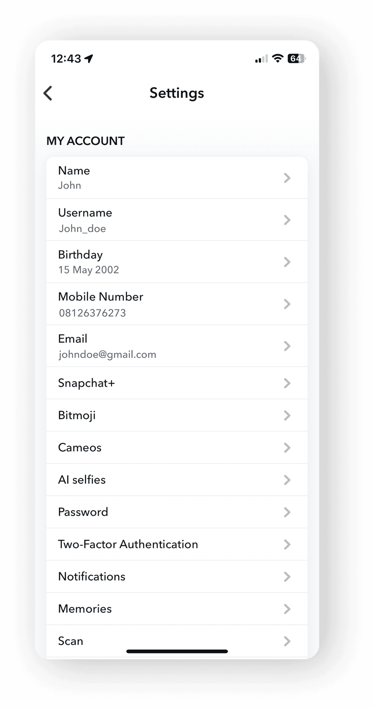
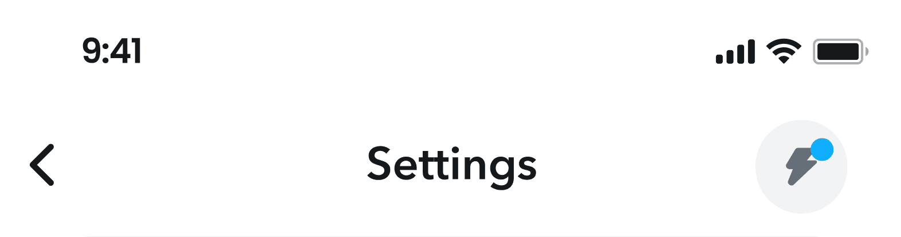
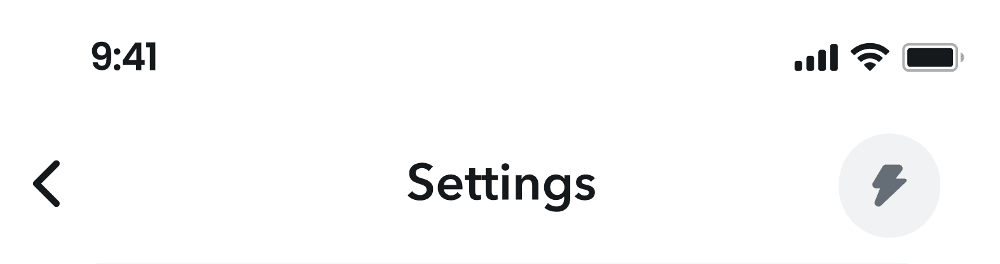

Personal details
- Name
- Alex Bennett
- Age
- 26
- Occupation
- Marketing specialist
- Tech proficiency
- Moderate
A self-initiated concept redesign. It is not affiliated with Snap and was not made for them.

Snapchat's settings had always been a bit of a headache for me: a tangled web of options, little explanation and no quick search. When I asked friends about their own experience, they were all in the same boat. So I asked: how can I help people navigate the settings page more easily?
I interviewed four friends with three questions: how clear the explanations are, what navigating the settings is like, and when they struggled to find a particular setting. Three things came up:

Building a persona gave me a vivid picture of who I was designing for. I mapped Alex's experience from navigation challenges to desired improvements, and used it to find where the settings could improve. Alex is a persona, not a real person.
Alex faces clarity concerns due to the absence of explanatory subtext, navigational fatigue from endless scrolling, and time-consuming searches.
Alex, a 26-year-old marketing specialist, values daily connections on Snapchat. Despite moderate tech-savviness, navigating settings is frustrating due to unclear explanations and exhaustive scrolling. Alex wants a more intuitive Snapchat for daily interactions.
Alex wants a user-friendly way to reach settings, clear and concise explanations for each one, and less time spent searching, for a quicker and more enjoyable experience.
Two changes answer the research directly: settings are grouped properly, each with a line of subtext, and a search bar with predictive results lets people jump to any setting.
Proper grouping for an efficient, user-friendly navigation system
Subtext for clarity
Search bar with predictive search
In the middle of the interviews, a friend described a common worry: private chats being screenshotted without permission, turning private banter into public fodder. The idea came from a real moment, and it led to a control over who can capture a conversation.
The prototype shows restricting screenshots and choosing who gets to take them.
To keep people in the loop about new features, I added a Settings Alert: the bolt icon in the header carries a blue circle when Snapchat adds a new setting, and the circle clears when there is nothing new.
New settings alert

The blue circle indicates there is a new setting
No new settings

No blue circle means no new setting
Note. Screenshot Privacy and Settings Alert are ideas I proposed. They were not tested and are not Snapchat features.